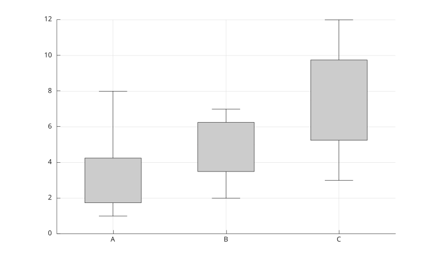

boxplot(X)
boxplot(X, group)
boxplot(parent, ...)
boxplot(..., propertyName, propertyValue)
h = boxplot(...)
| Paramètre | Description |
|---|---|
| X | Vecteur ou matrice numerique. Les colonnes d'une matrice sont affichees comme boites separees. |
| group | Valeurs de regroupement pour les donnees vectorielles. |
| parent | Axes ou hggroup parent. |
| Paramètre | Description |
|---|---|
| h | Groupe graphique contenant les patches et lignes des boites, moustaches, medianes et valeurs aberrantes. |
boxplot affiche les quartiles, la mediane, les moustaches et les valeurs aberrantes de donnees numeriques. Les valeurs NaN sont ignorees.
Les proprietes prises en charge sont Labels, Orientation, Widths, Whisker, Symbol, Colors, LineWidth, ShowOutliers, Notch, Positions et BoxStyle.
X = [1 2 3; 2 4 6; 3 6 9; 8 7 12];
boxplot(X, 'Labels', {'A', 'B', 'C'});
girls = randn(10, 1) * 5 + 140;
boys = randn(13, 1) * 8 + 135;
heights = [girls; boys];
sex = [ones(numel(girls), 1); 2 * ones(numel(boys), 1)];
boxplot(heights, sex, 'Labels', {'girls', 'boys'});
xlim([0 3]);
title('Grade 3 heights');data = [(randn(10, 1) * 5 + 140); (randn(25, 1) * 8 + 135); ...
(randn(20, 1) * 6 + 165)];
groups = [ones(10, 1); ones(25, 1) * 2; ones(20, 1) * 3];
labels = {'Team A', 'Team B', 'Team C'};
pos = [2, 1, 3];
boxplot(data, groups, 'Notch', 'on', 'Labels', labels, 'Positions', pos, ...
'BoxStyle', 'filled', 'Widths', 0.45);
title('Group splitting with paired vectors');boxplot(randn(100, 9), 'Notch', 'on', 'BoxStyle', 'filled', ...
'Colors', 'ygcwkmb', 'Whisker', 1.2);
title('Different colors specified with characters');colors = [0.7 0.7 0.7; 0.0 0.4 0.9; 0.7 0.4 0.3; ...
0.7 0.1 0.7; 0.8 0.7 0.4; 0.1 0.8 0.5; 0.9 0.9 0.2];
boxplot(randn(100, 13), 'Notch', 'on', 'BoxStyle', 'filled', ...
'Colors', colors, 'Whisker', 1.3, 'Widths', 0.45);
title('Different colors specified as RGB values');y = [1 2 3 4 10 11 12 25];
g = {'left', 'left', 'left', 'left', 'right', 'right', 'right', 'right'};
boxplot(y, g, 'Orientation', 'horizontal', 'Symbol', 'rx');